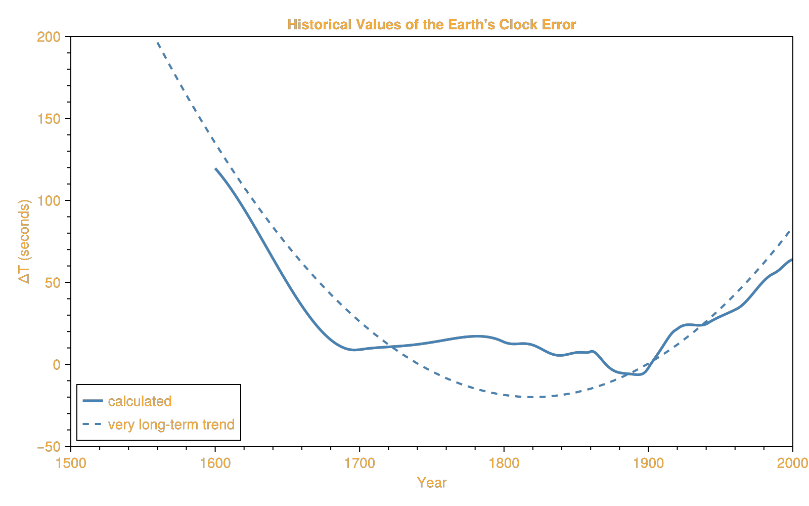

Delta T (ΔT)
Delta T (ΔT) is the difference between Terrestrial Dynamical Time (TD) and Universal Time (UT):
\[\Delta T = TD - UT\]
This correction is essential for accurate astronomical calculations because Earth's rotation rate is not constant. It varies due to tidal braking from the Moon, changes in Earth's moment of inertia, and other geophysical factors.
Implementation
SolarPosition.jl implements ΔT calculation using polynomial expressions fitted to historical observations and modern measurements from atomic clocks, based on [NAS25] and [MS04]:
- Historical data (-500 to 1950): Based on eclipse observations
- Modern era (1950-2005): Direct measurements from atomic clocks and radio observations
- Future (2005-2050): Extrapolation based on recent trends
- Far past/future: Parabolic extrapolation formula
Usage
SolarPosition.Positioning.calculate_deltat — Function
calculate_deltat(year::Real, month::Real) -> Float64
Compute ΔT (Delta T), the difference between Terrestrial Dynamical Time (TD) and Universal Time (UT).
ΔT = TD - UT
This value is needed to convert between civil time (UT) and the uniform time scale used in astronomical calculations (TD). The value changes over time due to variations in Earth's rotation rate caused by tidal braking and other factors.
Arguments
year::Real: Calendar year (supports -1999 to 3000, with warnings outside this range)month::Real: Month as a real number (1-12, fractional values supported for interpolation)
Returns
Float64: ΔT in seconds
Examples
julia> using SolarPosition.Positioning: calculate_deltatjulia> calculate_deltat(2020, 6)71.85030032812497julia> using Datesjulia> calculate_deltat(Date(2020, 6, 15))71.87173085145835julia> calculate_deltat(DateTime(2020, 6, 15, 12, 30))71.87173085145835Literature
The polynomial expressions for ΔT are from [NAS25], based on the work by [MS04].
Examples
Basic Usage
Calculate ΔT for a specific year and month:
using SolarPosition.Positioning: calculate_deltat# Calculate ΔT for June 2020dt = calculate_deltat(2020, 6)println("ΔT ≈ $(round(dt, digits=2)) seconds")ΔT ≈ 71.85 secondsUsing Date Objects
For more convenient usage with date objects:
using SolarPosition.Positioning: calculate_deltatusing Dates# Using Datedate = Date(2020, 6, 15)dt1 = calculate_deltat(date)# Using DateTimedatetime = DateTime(2020, 6, 15, 12, 30, 45)dt2 = calculate_deltat(datetime)# Using ZonedDateTimeusing TimeZoneszdt = ZonedDateTime(2020, 6, 15, 12, 30, 45, tz"UTC")dt3 = calculate_deltat(zdt)println("Date: ΔT ≈ $(round(dt1, digits=2)) seconds")println("DateTime: ΔT ≈ $(round(dt2, digits=2)) seconds")println("ZonedDateTime: ΔT ≈ $(round(dt3, digits=2)) seconds")Date: ΔT ≈ 71.87 seconds
DateTime: ΔT ≈ 71.87 seconds
ZonedDateTime: ΔT ≈ 71.87 secondsHistorical Values
Calculate ΔT for historical dates:
using SolarPosition.Positioning: calculate_deltat# Ancient Rome (year 0)dt_ancient = calculate_deltat(0, 6)println("Year 0: ΔT ≈ $(round(dt_ancient, digits=0)) seconds")# Early telescope era (1650)dt_1650 = calculate_deltat(1650, 6)println("Year 1650: ΔT ≈ $(round(dt_1650, digits=1)) seconds")# Near zero around 1900dt_1900 = calculate_deltat(1900, 6)println("Year 1900: ΔT ≈ $(round(dt_1900, digits=1)) seconds")Year 0: ΔT ≈ 10579.0 seconds
Year 1650: ΔT ≈ 49.5 seconds
Year 1900: ΔT ≈ -2.1 secondsPlotting Historical Trend
Visualize how ΔT has changed over time, similar to the measured values derived from telescopic observations:
using SolarPosition.Positioning: calculate_deltatusing CairoMakie# Calculate ΔT for years 1600-2000 (historical measurements)years = 1600:1:2000deltat_values = [calculate_deltat(year, 6) for year in years]# Create plot with transparent backgroundfig = Figure(size=(800, 500), backgroundcolor=:transparent, textcolor="#f5ab35")ax = Axis(fig[1, 1], xlabel = "Year", ylabel = "ΔT (seconds)", title = "Historical Values of the Earth's Clock Error", backgroundcolor=:transparent, xgridvisible = false, ygridvisible = false, xticks = 1500:100:2000, xminorticks = IntervalsBetween(5), xminorticksvisible = true, yminorticks = IntervalsBetween(5), yminorticksvisible = true)# Plot the measured/calculated valueslines!(ax, years, deltat_values, linewidth=2.5, color=:steelblue, label="calculated")# Add a very long-term parabolic trend line# Using the formula: ΔT ≈ -20 + 32 * ((year - 1820) / 100)^2# This represents the parabolic trend centered around 1820-1825trend_years = 1560:10:2050trend_values = [-20 + 32 * ((y - 1820) / 100)^2 for y in trend_years]lines!(ax, trend_years, trend_values, linewidth=2, color=:steelblue, linestyle=:dash, label="very long-term trend")axislegend(ax, position=:lb, backgroundcolor=:transparent)xlims!(ax, 1500, 2000)ylims!(ax, -50, 200)fig
This plot is an attempt to reproduce the result of [MS04, Fig 1., page 329] and shows the measured values of ΔT derived from astronomical observations since 1600 CE.
Accuracy
The accuracy of ΔT calculations varies depending on the time period:
- Modern era (1950-2025): Very accurate (< 1 second)
- Historical (1600-1950): Accurate to a few seconds
- Medieval (500-1600): Accuracy decreases to ~10-30 seconds
- Ancient (< 500): Accuracy decreases significantly (~50-500 seconds)
- Future predictions: Uncertainty increases with time
The uncertainty in ΔT arises because Earth's rotation is affected by unpredictable factors like atmospheric circulation, ocean currents, and tectonic events. For more details on the polynomial expressions and methodology, see [NAS25] and [MS04].